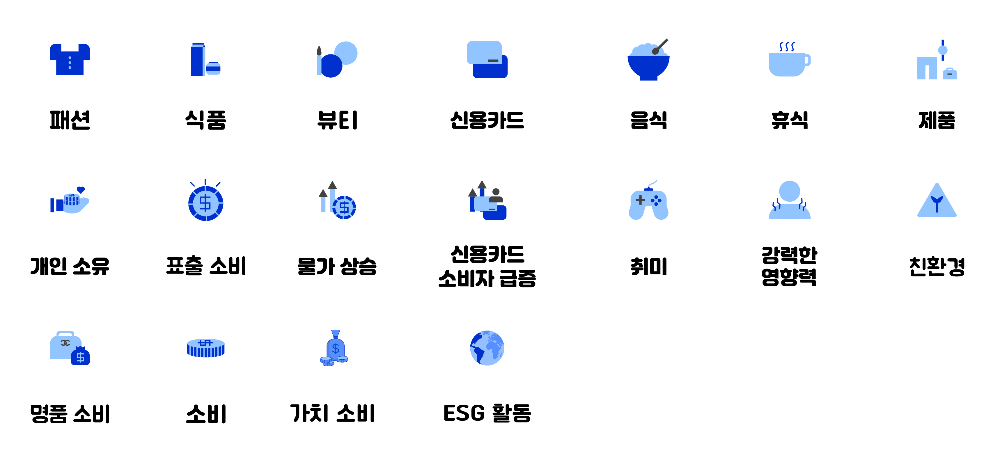

요즘 MZ세대들의 소비 습관에 관한 데이터를 시각화하여 디자인하였습니다.
MZ세대들의 소비 유형 및 특징, 소비 전망 등에 관하여 자세히 알아보고자
인포그래픽 디자인 페이지를 기획하게 되었습니다. 포토샵과 일러스트를
활용해 이미지 또는 텍스트 등을 디자인하였습니다.
본래의 인포그래픽 표지 타이틀 색상에 맞추어 비슷한 계열의 색으로 메인컬러인 #94c0ff
와 #578fff 번갈아 사용하였으며 서브컬러로는 진한 계열 중 블루와 어울리는 색으로
는 #1f5fff 이므로 텍스트 부분에 사용하였습니다.
#1f5fff
#578fff
#94c0ff
일러스트를 활용해 인포그래픽 아이덴티티에 맞게 주로 쓰이는 동전처럼
가독성이 좋고 둥근 서체로 디자인하였습니다.
메인 컬러와 서브 컬러를 활용한 아이콘을 최대한 직관적으로 디자인하였습니다.
